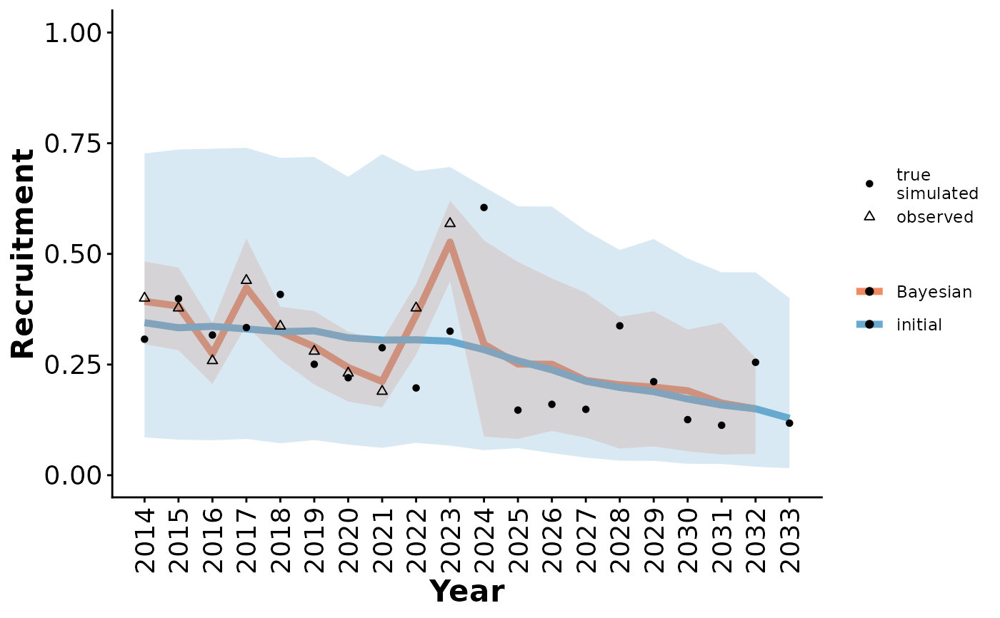

Plot Bayesian population model results, with (optionally) the distribution of outcomes from the initial model, local observations, and true local state for comparison.
Usage
plotRes(
modTables,
parameter,
lowBound = 0,
highBound = 1,
facetVars = NULL,
labFontSize = 14,
legendPosition = "right",
breakInterval = 1
)Arguments
- modTables
list. A list of model results tables created using
[getOutputTables()].- parameter
character. Which parameter to plot, if more than one, a list of plots is returned.
- lowBound, highBound
numeric. Lower and upper y axis limits
- facetVars
character. Optional. Vector of column names to facet by
- labFontSize
numeric. Optional. Label font size if there are not facets. Font size is 10 pt if facets are used.
- legendPosition
"bottom", "right", "left","top", or "none". Legend position.
- breakInterval
number. How many years between x tick marks?
See also
Caribou demography functions:
bbouMakeSummaryTable(),
caribouBayesianPM(),
caribouPopGrowth(),
caribouPopSimMCMC(),
compositionBiasCorrection(),
demographicCoefficients(),
demographicProjectionApp(),
demographicRates(),
doSim(),
getOutputTables(),
getPriors(),
getScenarioDefaults(),
getSimsInitial(),
getSimsNational(),
popGrowthTableJohnsonECCC,
runScnSet(),
simulateObservations()
Examples
scns <- getScenarioDefaults(projYears = 10, obsYears = 10,
obsAnthroSlope = 1, projAnthroSlope = 5,
collarCount = 20, cowMult = 5)
simO <- simulateObservations(scns)
out <- caribouBayesianPM(surv_data = simO$simSurvObs, recruit_data = simO$simRecruitObs,
disturbance = simO$simDisturbance,
startYear = 2014, niters=10)
#> Compiling model graph
#> Resolving undeclared variables
#> Allocating nodes
#> Graph information:
#> Observed stochastic nodes: 10
#> Unobserved stochastic nodes: 33
#> Total graph size: 665
#>
#> Initializing model
#>
#> Compiling model graph
#> Resolving undeclared variables
#> Allocating nodes
#> Graph information:
#> Observed stochastic nodes: 29
#> Unobserved stochastic nodes: 70
#> Total graph size: 705
#>
#> Initializing model
#>
out_tbl <- getOutputTables(out, exData = simO$exData, paramTable = simO$paramTable,
simInitial = getSimsInitial())
#> Using saved object
plotRes(out_tbl, parameter = "Recruitment")
